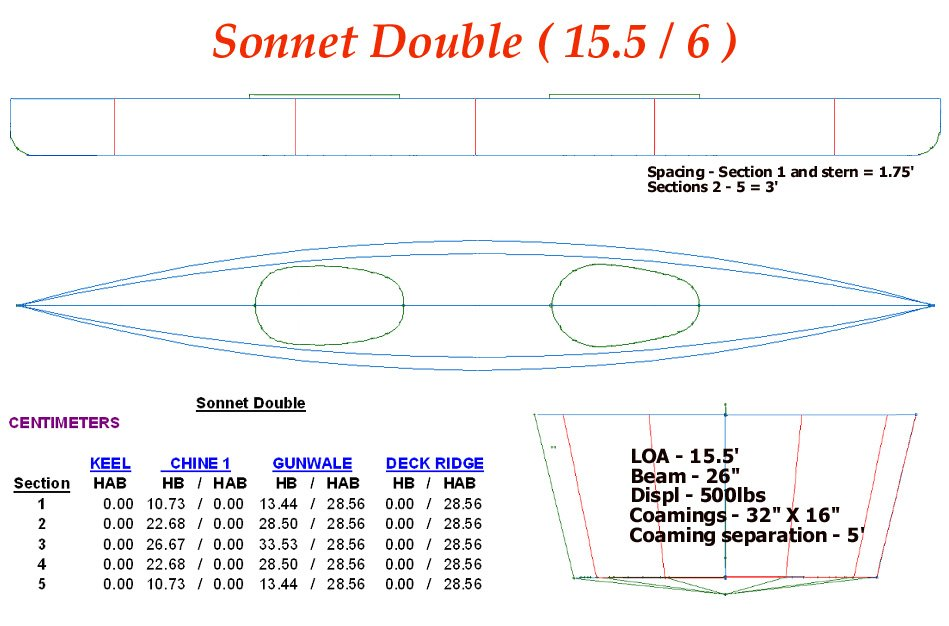

| Menu Previous Page Next Page | |
|

The Sonnet Double (15.5/6) is 15.5ft long and uses 6 Folbot Greenland II 15ft sponsons. Pics of the prototype can be seen in the
Inflatable kayak Gallery. The vertical stems have a 6" radius curve making for a sloping below waterline entry. The vertical stem shape also
provides a long waterline length (LWL) and allows the use of 6 X 15' sponsons. In this configuration, fewer spares are required.
The double differs from all other Sonnet's in it's use of two side stringers (chines). The use of a third sponson per side greatly
increases displacement and permits a drier ride than the four sponson Sonnet's.
|
|